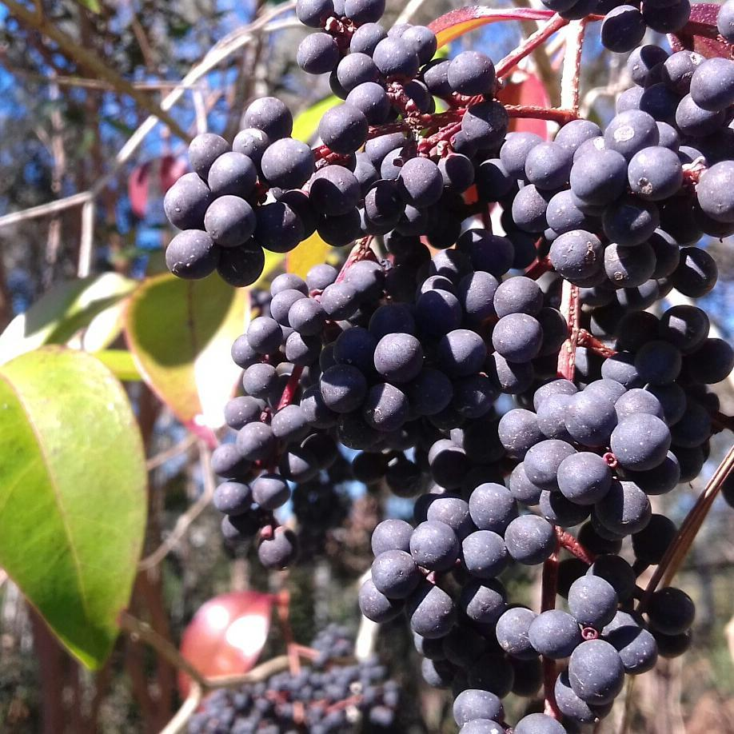
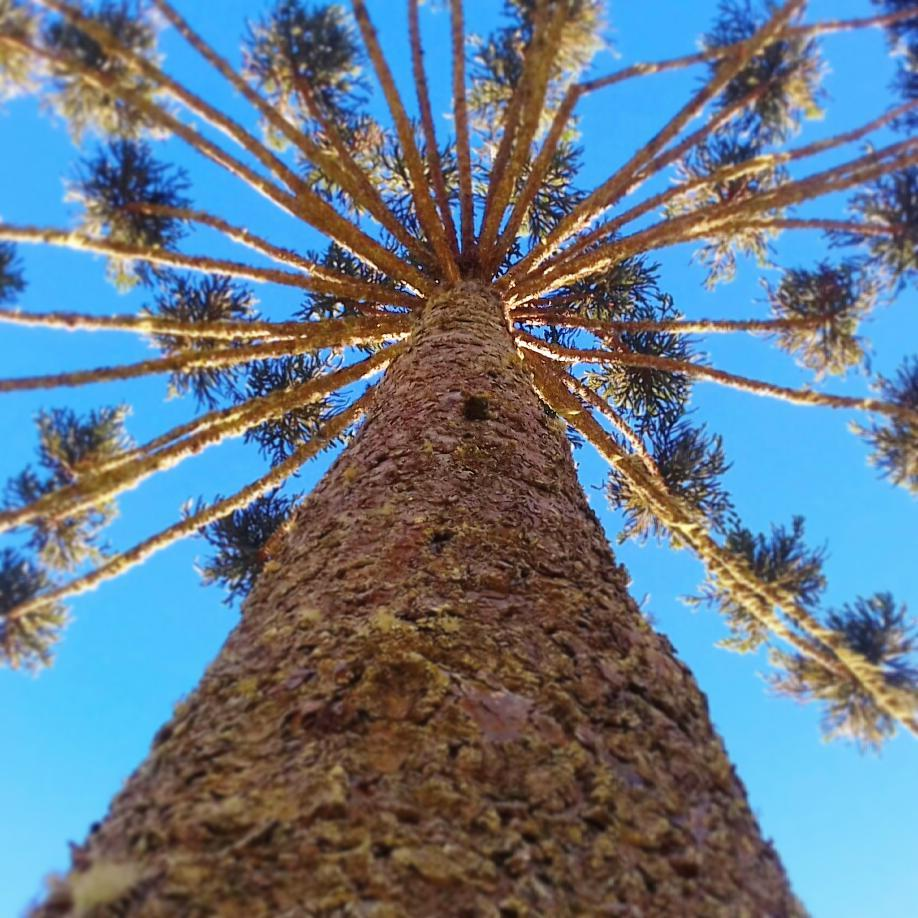
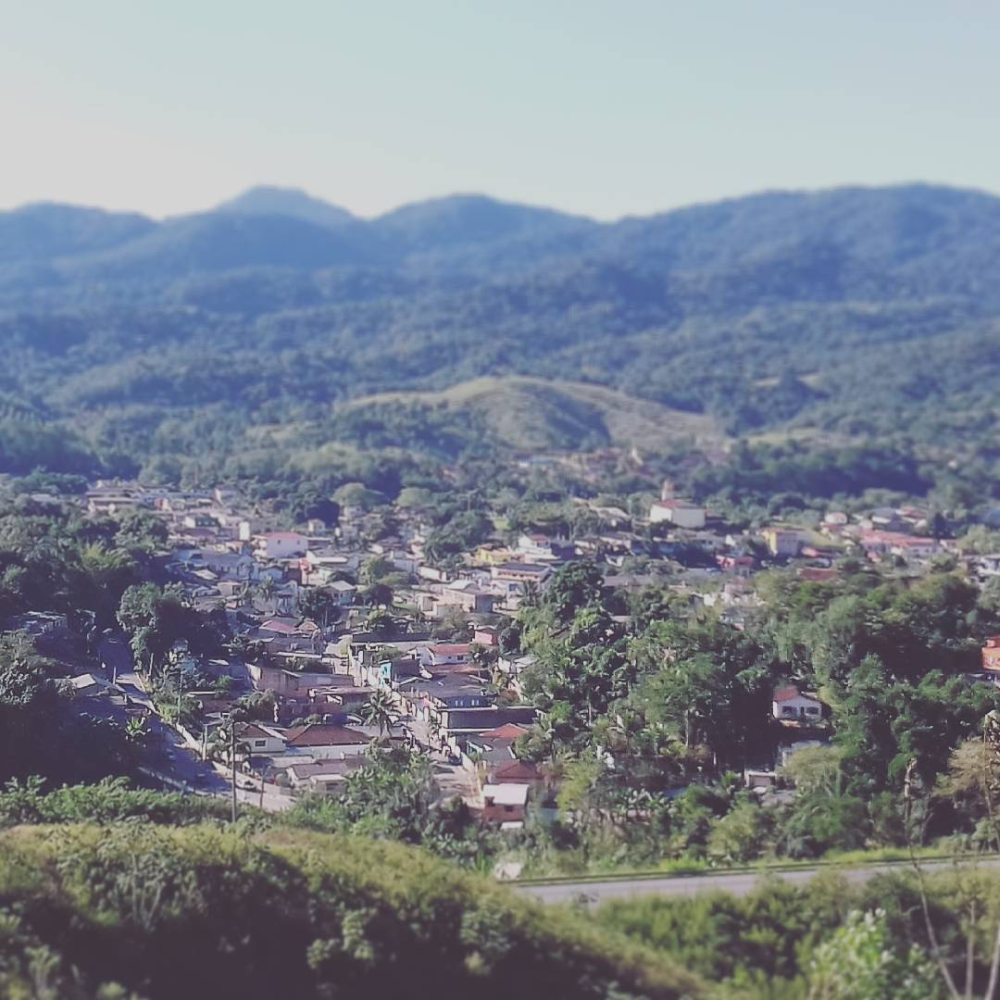

Uvas
Rio Negrinho - SC, 2017

Araucária
Rodovia Régis Bittencourt - PR, 2017

Panorama da cidade
Pedro de Toledo - SP, 2016
Rio Negrinho - SC, 2017
Rodovia Régis Bittencourt - PR, 2017
Pedro de Toledo - SP, 2016